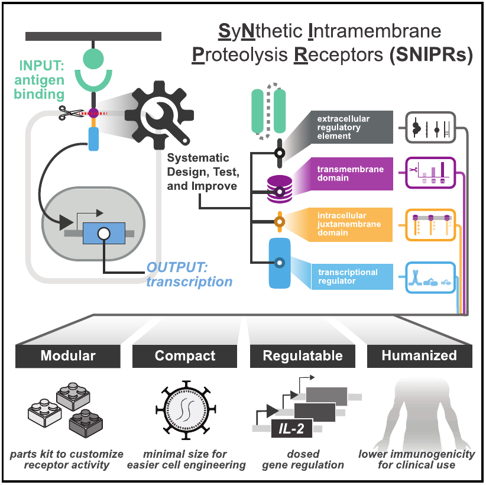

O que é e como funciona um SNIPR?

O receptor conecta um sinal externo a uma resposta: reconhece um antígeno, sofre clivagem proteolítica e libera um regulador de transcrição.
- LBD
- Liga-se ao antígeno e define o alvo reconhecido pelo receptor.
- ECD
- Compõe a região extracelular entre o domínio de ligação e a membrana.
- TMD
- Ancora o receptor na membrana e participa do mecanismo de clivagem intramembrana.
- JMD
- Região próxima à membrana, no lado intracelular, que permite modular a atividade do receptor.
- PAYLOAD
- Regulador de transcrição liberado após a clivagem (responsável pela modulação da expressão gênica).
Arquitetura Modular do Receptor
Escolha um módulo da biblioteca ou abra o editor abaixo de cada seletor para aplicar sua própria sequência. Módulos personalizados ficam salvos neste navegador.
Propriedades Consolidadas
Comprimento Total
0 aa
Score Médio
0.0
Identificador do Receptor:
SNIPR-LBD-ECD-TMD-JMD-PAYLOAD
Visualização da Sequência
Renderização Baseada em CoresLBD
ECD
TMD
JMD
PAYLOAD
FASTA SEQUENCE PREVIEW
>SNIPR_assembled_sequence
Referências